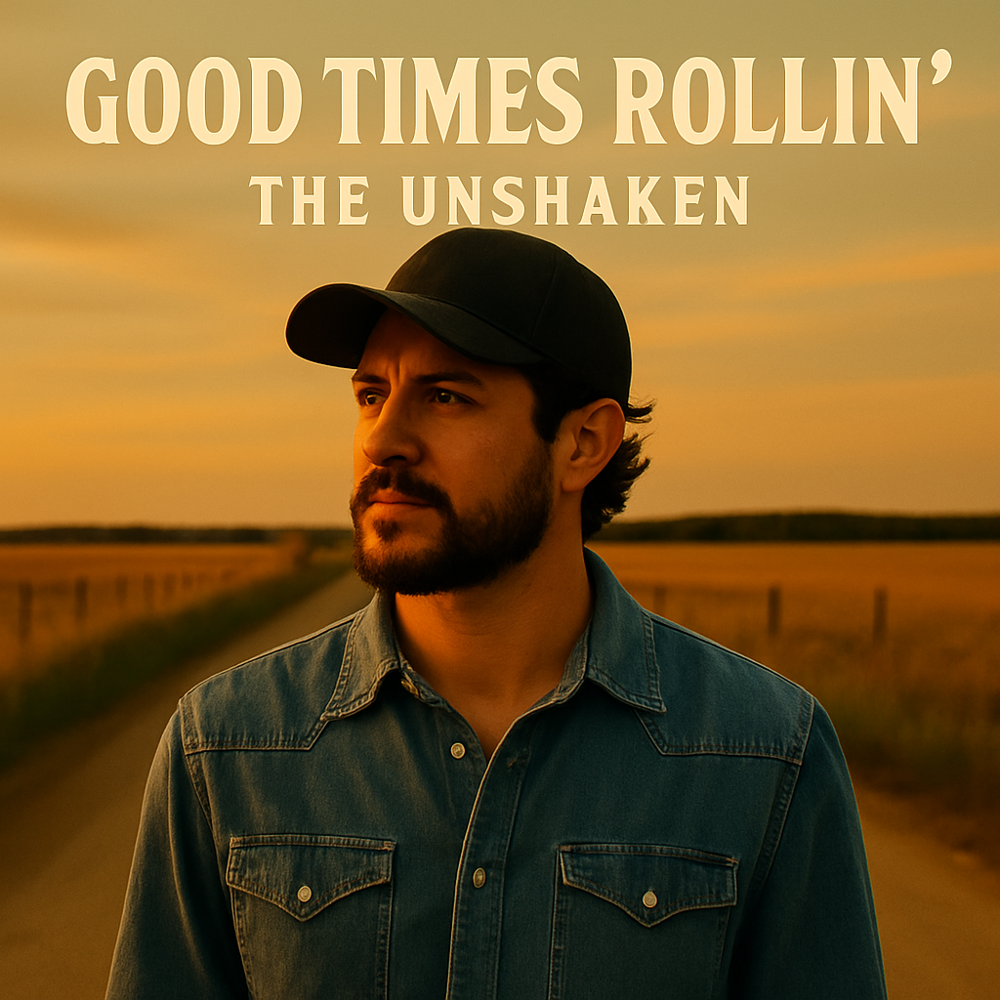
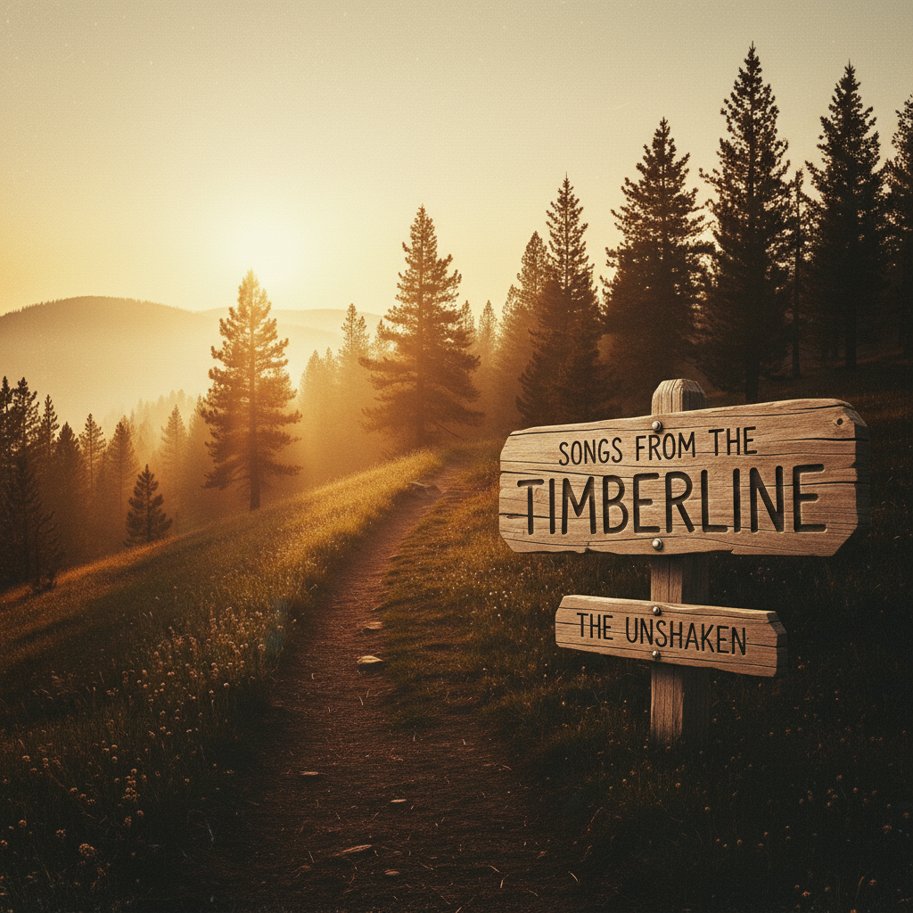
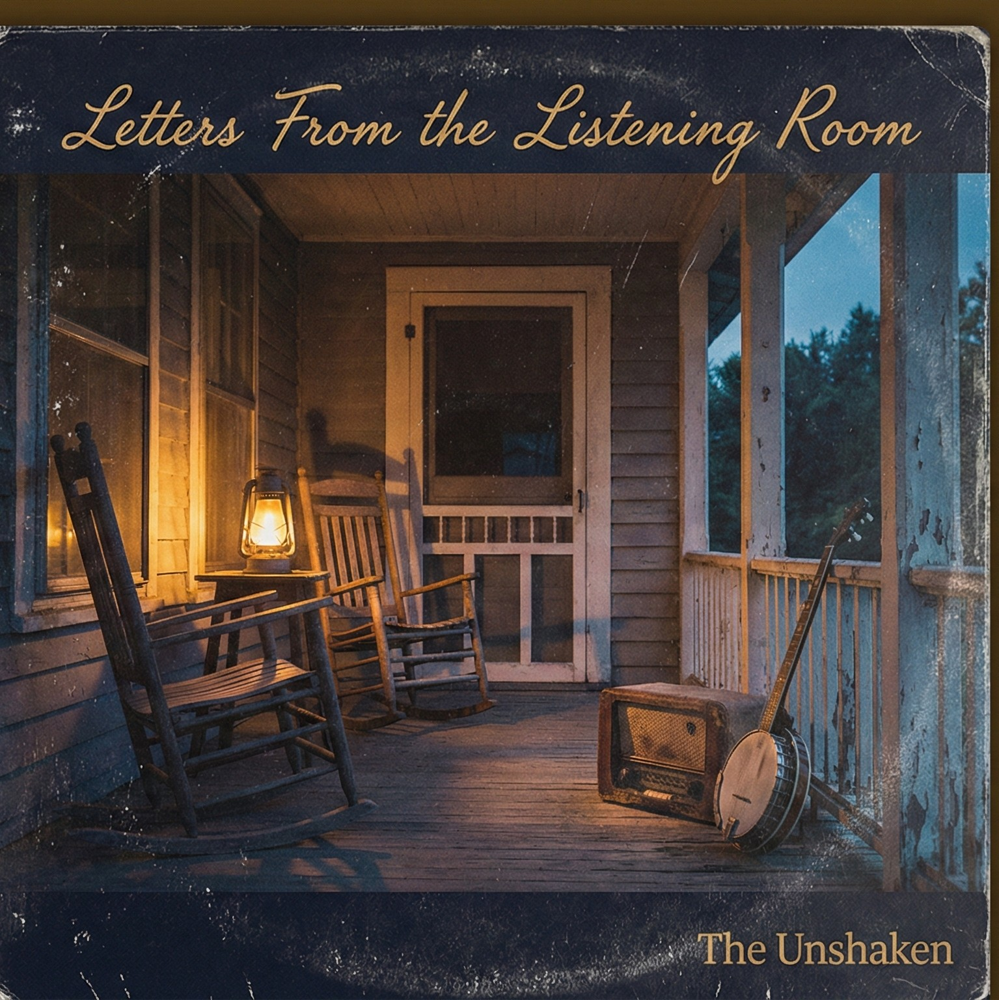
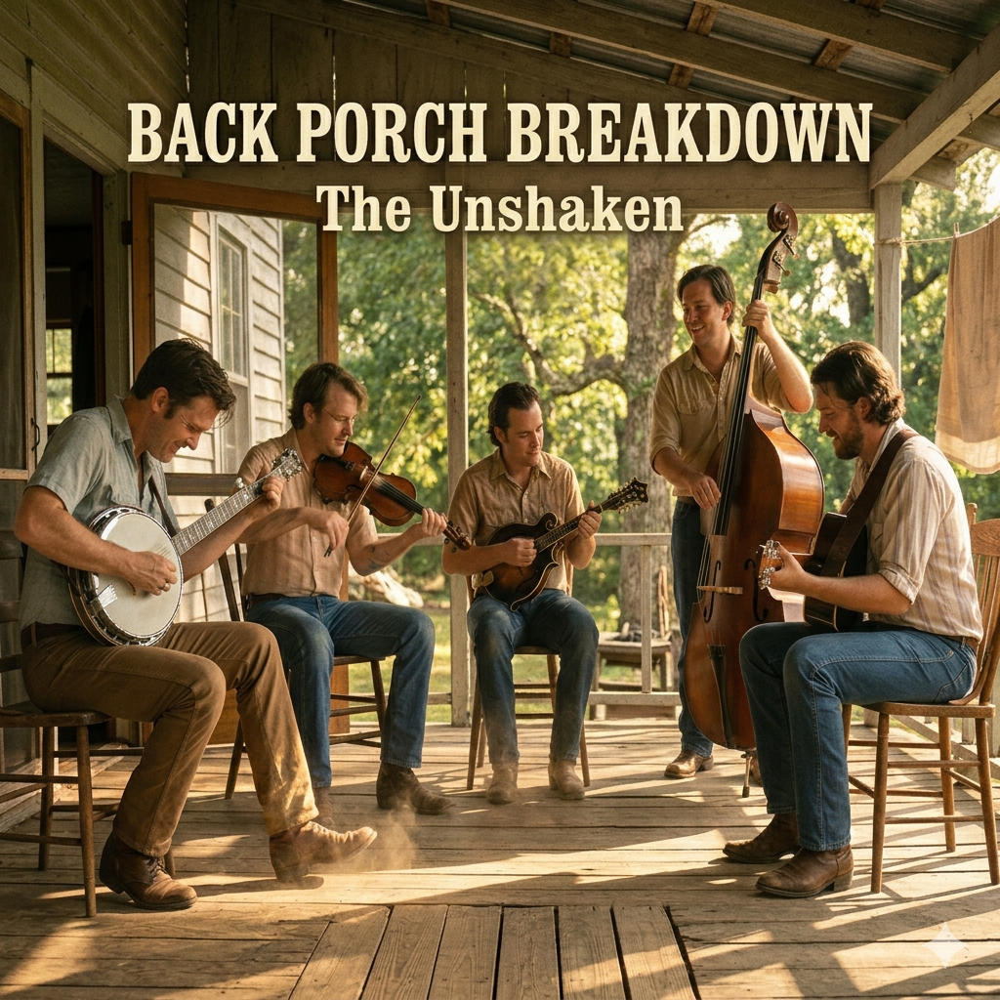

The Porch
Rooted, reflective, and built on story. This is the quieter road — front porch songs, worn wood, river air, and albums meant to be lived with.
Begin with The Old River Sessions

The Old River Sessions
A quiet front porch, a worn guitar, and stories carried on the current.
From here → Seasons of Grace
▶ Start the Journey
Stay a While

Seasons of Grace
Weathered, steady, and full of lived truth.
From here → Letters From the West Wind
▶ Sit a While
Letters From the West Wind
Stories carried like letters across distance and time.
From here → Asphalt Hymns
▶ Read the Letters

Asphalt Hymns
Dust, grit, and redemption stretched across open roads.
From here → Good Times Rollin’
▶ Hit the Road

Good Times Rollin’
Easy miles, open skies, and stories that don’t rush.
From here → Songs From the Timberline
▶ Roll On

Songs From the Timberline
High country air, hard ground, and stories carved from the land.
From here → Letters From the Listening Room
▶ Head Up the Trail

Letters From the Listening Room
Songs shaped by real voices, written like letters left behind.
From here → The Fire and the Measure
▶ Step Inside

The Fire and the Measure
Where discipline meets conviction, and the work defines the man.
From here → Back Porch Breakdown
▶ Hold the Line

Back Porch Breakdown
Loose strings, fast picking, and the sound of a porch that won’t sit still.
▶ Let It Rip